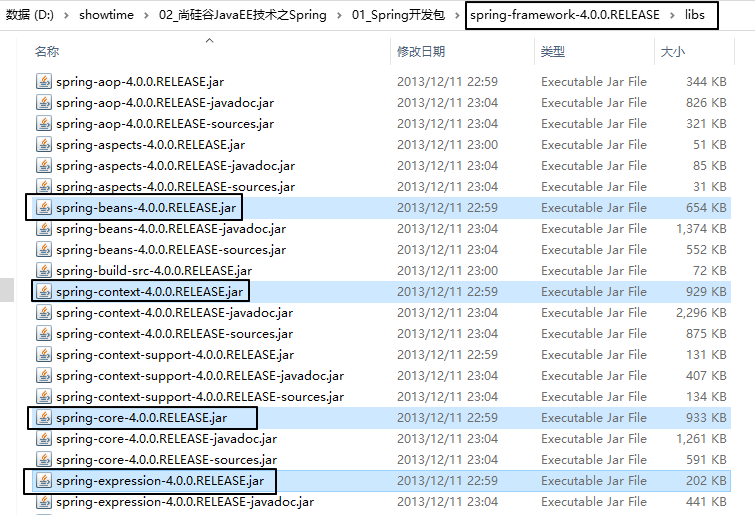
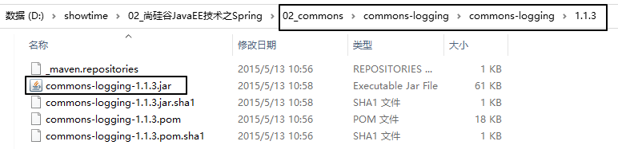
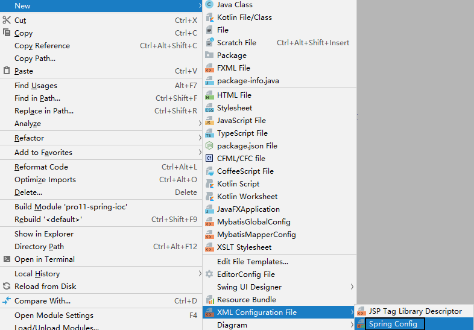
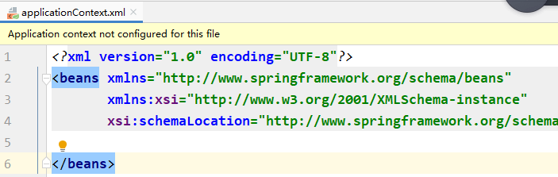
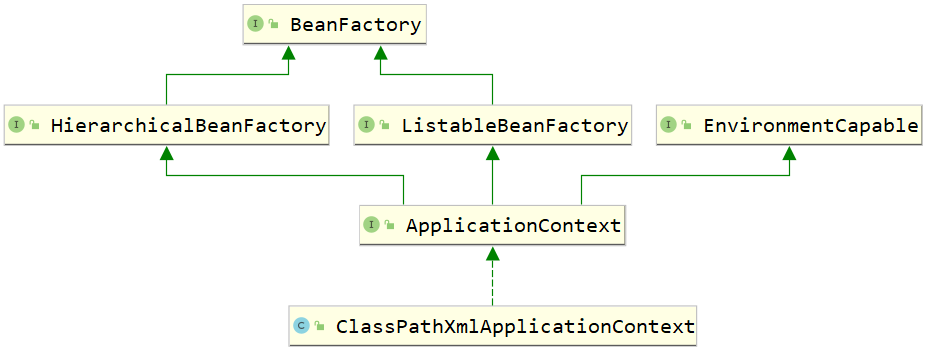
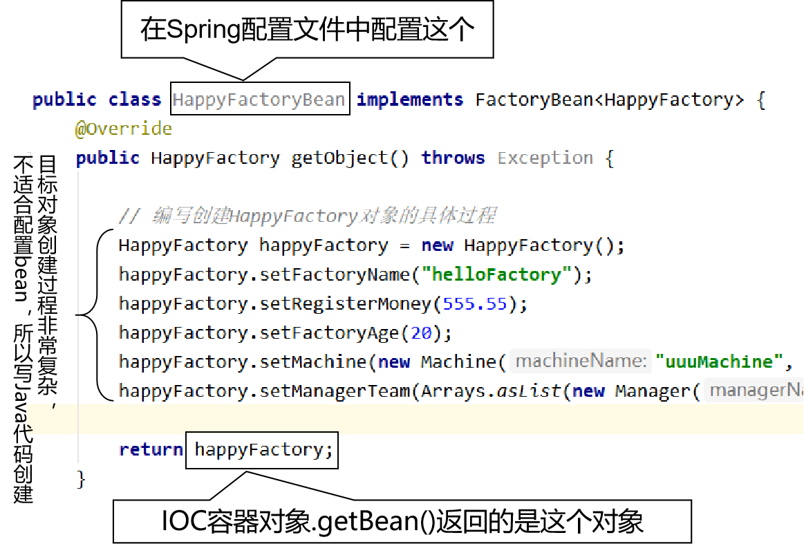
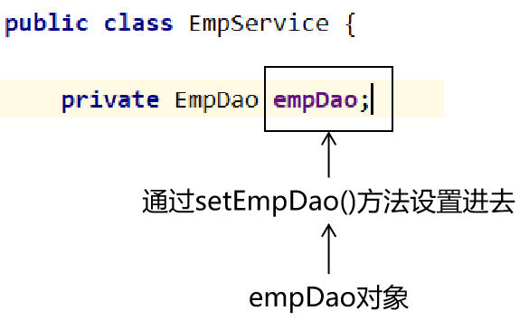

一、Spring概述1、Spring的学习内容2、IOC①IOC容器作用②组件[1]程序员开发的组件[2]框架的组件③IOC对组件的管理二、IOC/DI1、概念①IOC②DI2、IOC容器基本操作3、HelloWorld①引入jar包②创建Spring配置文件③配置Spring的配置文件[1]创建一个需要IOC容器创建对象的类[2]在Spring配置文件中配置上面的类④Java代码三、IOC实验1、实验一2、实验二[重要]3、实验三4、实验四5、实验五6、实验六[重要]7、实验七[比较重要]8、实验八集合属性9、实验九集合类型的bean10、实验十FactoryBean[比较重要]①FactoryBean接口说明②创建FactoryBean③配置FactoryBean11、实验十一[比较重要]12、实验十二bean的后置处理器[应付面试]①创建后置处理器类②注册后置处理器类③执行的时机13、实验十三bean的初始化方法和销毁方法[应付面试]①在bean所属的Java类中创建初始化方法和销毁方法②配置bean时指定初始化方法和销毁方法③junit测试④bean的生命周期14、实验十四引用外部属性文件[重要]①准备外部属性文件②在Spring配置文件中引入外部属性文件③基于外部属性文件配置数据源④junit测试15、实验十五基于XML的自动装配①概念②实现方式16、实验十六通过注解配置bean[重要]①组件相关的注解②在类上标记注解③配置自动扫描的包④junit测试⑤bean的id[1]默认情况[2]指定bean的id⑥bean的范围17、实验十七通过注解自动装配①使用@Autowired注解的基本情况[重要]②新旧代码对比18、实验十八扫描包相关特殊情况①扫描多个包可以使用逗号分开②使用resource-pattern属性进行过滤③排除特定类④仅扫描特定类19、实验十九自动装配特殊情况①可以加@Autowired注解的位置②@Autowired注解设置required属性③@Autowired注解查找目标bean的顺序④@Qualifier注解
一、Spring概述
1、Spring的学习内容
- IOC容器
- AOP面向切面编程
- JdbcTemplate
- 声明式事务
2、IOC
①IOC容器作用
管理组件。
②组件
组件是组成项目的模块；
组件也是一种对象；
组件内部包含很多颗粒度更小的对象。
项目：类比一个工厂。
组件：类比工厂中的车间。
对象：组成车间中机器的零件。
[1]程序员开发的组件
JavaWeb阶段
- 表述层：Servlet对象
- 业务逻辑层：Service对象
- 持久化层：Dao对象
SSM阶段
- 表述层：Controller或Handler对象
- 业务逻辑层：Service对象
- 持久化层：Dao或Mapper对象
[2]框架的组件
- SqlSessionFactory：将来把创建这个对象的任务交给Spring来完成，我们只需要告诉Spring：Mybatis全局配置文件在哪，具体创建过程的细节就不需要我们过问了。
- SqlSession
- DruidDataSource
提前看看未来的代码：
xpublic class EmpController { private EmpService empService; ("/get/emp/list") public String getEmpList(Model model){ List<Employee> list = empService.getEmpList(); model.addObject("list",list); return "emp/list"; }}----------------------------------------------public class EmpService { private EmpMapper empMapper; public List<Employee> getEmpList(){ return empMapper.selectEmpList(); }}-----------------------------------public interface EmpMapper { List<Employee> selectEmpList();}③IOC对组件的管理
创建对象
初始化
给对象中的属性赋值
- 常规的简单的数据，例如：500、"tom"、30.66、true
- 其他的组件
释放对象前执行清理工作
二、IOC/DI
1、概念
①IOC
Inversion of control：反转控制。
- IOC本身是一个思想
- IOC容器是Spring对IOC思想的具体落地实现
“天上飞的理念，地上跑的实现”
通过吃饭的例子来说明“反转控制”：
- 自己做饭：需要自己买菜、洗菜、择菜、炒菜、蒸饭……所有细节都需要自己亲自参与——自己主动向环境索取资源，并参与创建资源的详细过程。
- 回家吃饭：妈妈把饭做好，送到你嘴里——我们被动的享受环境把资源注入给我们，我们不需要参与、过问资源创建的过程、细节。
②DI
Dependcy Injection：依赖注入。
- 我们负责明确表达自己需要什么资源。例如：EmpService需要EmpMapper
- 容器负责把我们需要的资源准备好，注入给我们。例如：容器把EmpMapper准备好，设置到EmpService对象中。
DI是IOC的最经典的实现；过了这么多年，我们发现IOC基本上也没有别的实现，所以现在对IOC和DI不做严格区分，可以认为IOC和DI是等同的。
2、IOC容器基本操作
从使用者的角度来说，IOC容器包括下面几个基本操作
准备好IOC容器对应的配置文件
创建IOC容器对象本身
把我们开发的组件交给IOC容器管理（让IOC容器替我们创建对象）
让IOC容器给我们的对象设置属性
- 常规的简单数据：500、"tom"、30.66、true
- 其他组件对象：EmpService里面设置EmpMapper，以后我们管这个操作叫“装配”
从容器中获取我们需要使用的对象
3、HelloWorld
①引入jar包


②创建Spring配置文件


③配置Spring的配置文件
在Spring配置文件中指定需要IOC容器替我们创建的对象，并设置属性
[1]创建一个需要IOC容器创建对象的类
xxxxxxxxxxpublic class HappyFactory { private String factoryName; private Double registerMoney; private Integer factoryAge;[2]在Spring配置文件中配置上面的类
xxxxxxxxxx<!-- 通过配置bean标签，告诉Spring的IOC容器创建HappyFactory的对象 --><!-- id属性：指定将来创建好的对象的唯一标识 --><!-- class属性：指定要创建对象的类的全类名 --><bean id="happyFactory" class="com.atguigu.spring.component.HappyFactory"> <!-- 通过配置property标签给对象设置属性 --> <property name="factoryName" value="dreamFactory"/> <property name="factoryAge" value="20"/> <property name="registerMoney" value="500"/></bean>
④Java代码
xxxxxxxxxxpublic class SpringTest { // 读取Spring配置文件，创建IOC容器对象 private ApplicationContext iocContainer = new ClassPathXmlApplicationContext("applicationContext.xml"); public void helloWorld() { // 从IOC容器对象中获取已配置的bean Object happyFactory = iocContainer.getBean("happyFactory"); System.out.println("happyFactory = " + happyFactory); }}三、IOC实验
1、实验一
Debug查看对象的属性是如何设置进去的
- 结论1：创建HappyFactory对象并设置属性值是发生在IOC容器对象创建的过程中，而不是getBean()的时候。
- 结论2：Spring IOC容器内部使用BeanFactory创建bean的对象，对外提供ApplicationContext给开发者使用。
- 结论3：bean的属性通过setXxx()方法注入到bean对象中。

2、实验二[重要]
根据类型获取bean
xxxxxxxxxxpublic void testGetBeanByType() { // 根据类型获取bean对象 HappyFactory factory = iocContainer.getBean(HappyFactory.class); System.out.println("factory = " + factory);}此时如果同样类型的bean在IOC容器中不只一个对象，那么会抛出下面异常：
xxxxxxxxxxorg.springframework.beans.factory.NoUniqueBeanDefinitionException: No qualifying bean of type [com.atguigu.spring.component.HappyFactory] is defined: expected single matching bean but found 2: happyFactory,happyFactory23、实验三
使用构造器给属性赋值。这个配置方式我们自己几乎不用，能看懂就行。
xxxxxxxxxx<!-- 通过构造器给bean的属性赋值 --><bean id="happyFactory3" class="com.atguigu.spring.component.HappyFactory"> <!-- 通过constructor-arg标签给构造器传入参数 --> <constructor-arg value="goodFactory"/> <constructor-arg value="8877.66"/> <constructor-arg value="99"/></bean><bean id="happyFactory4" class="com.atguigu.spring.component.HappyFactory"> <!-- 通过constructor-arg标签给构造器传入参数 --> <constructor-arg value="66" index="2"/> <constructor-arg value="5544.33" index="1"/> <constructor-arg value="helloFactory" index="0"/></bean>4、实验四
使用p名称空间给属性赋值
xxxxxxxxxx<!-- 使用p名称空间给bean的属性赋值 --><bean id="happyFactory5" class="com.atguigu.spring.component.HappyFactory" p:factoryName="appleFactory" p:factoryAge="33" p:registerMoney="666.66"/>5、实验五
null值和级联属性
xxxxxxxxxx<!-- 给属性设置不同的值 --><bean id="happyFactory6" class="com.atguigu.spring.component.HappyFactory"> <!-- 通过配置property标签给对象设置属性 --> <property name="factoryName"> <!-- 使用null标签设置一个null值 --> <null/> </property> <property name="factoryAge" value="20"/> <property name="registerMoney" value="500"/> <!-- 给级联属性赋值之前，必须先让级联的属性有一个具体的对象（当然，这样不是我们希望的） --> <property name="machine" ref="machine"/> <!-- 给级联属性赋值 --> <property name="machine.machineName" value="iceCreamMachine"/> <property name="machine.machinePrice" value="50.50"/></bean><bean id="machine" class="com.atguigu.spring.component.Machine"/>6、实验六[重要]
给属性赋值的时候，引用另外一个bean。（这个实验中配置的方式是符合Spring使用习惯的）
xxxxxxxxxx<!-- 在给属性设置值的时候引用另外一个bean --><!-- 配置machine --><bean id="machine2" class="com.atguigu.spring.component.Machine"> <property name="machineName" value="bananaMachine"/> <property name="machinePrice" value="555.66"/></bean><!-- 配置HappyFactory --><bean id="happyFactory7" class="com.atguigu.spring.component.HappyFactory"> <property name="factoryName" value="bananaFactory"/> <property name="factoryAge" value="33"/> <!-- value属性指定的都是字面量 --> <property name="registerMoney" value="33.44"/> <!-- ref属性指定的是另一个bean的id，如果不小心把ref属性写成了value属性，那么Spring不会把value的值看成是一个bean的id，而就是一个普通的字符串，赋值的时候很可能会出错 --> <property name="machine" ref="machine2" /></bean>7、实验七[比较重要]
xxxxxxxxxx<!-- 以内部bean的形式给Machine属性赋值 --><bean id="happyFactory8" class="com.atguigu.spring.component.HappyFactory"> <property name="factoryName" value="bananaFactory"/> <property name="factoryAge" value="33"/> <property name="registerMoney" value="33.44"/> <property name="machine"> <!-- 内部bean仅限于当前位置使用，外部无法使用，所以可以不用写id属性 --> <bean class="com.atguigu.spring.component.Machine"> <property name="machineName" value="catMachine"/> <property name="machinePrice" value="66.33"/> </bean> </property></bean>8、实验八集合属性
xxxxxxxxxx<!-- 配置集合属性 --><bean id="happyFactory9" class="com.atguigu.spring.component.HappyFactory"> <property name="factoryName" value="bananaFactory"/> <property name="factoryAge" value="33"/> <property name="registerMoney" value="33.44"/> <!-- 给集合属性赋值 --> <property name="productLineList"> <list> <!-- 给集合属性填充值的时候可以使用内部bean的形式或通过ref标签引用另一个外部bean --> <bean class="com.atguigu.spring.component.ProductLine"> <property name="productName" value="lineOne"/> </bean> <bean class="com.atguigu.spring.component.ProductLine"> <property name="productName" value="lineTwo"/> </bean> <bean class="com.atguigu.spring.component.ProductLine"> <property name="productName" value="lineThree"/> </bean> <ref bean="productLine"/> </list> </property></bean><bean id="productLine" class="com.atguigu.spring.component.ProductLine"> <property name="productName" value="lineFour"/></bean>9、实验九集合类型的bean
xxxxxxxxxx<!-- 直接配置集合类型 --><util:list id="managerTeamId"> <bean class="com.atguigu.spring.component.Manager"> <property name="managerName" value="tom"/> <property name="managerSalary" value="500.500"/> </bean> <bean class="com.atguigu.spring.component.Manager"> <property name="managerName" value="jerry"/> <property name="managerSalary" value="600.500"/> </bean> <bean class="com.atguigu.spring.component.Manager"> <property name="managerName" value="bob"/> <property name="managerSalary" value="700.500"/> </bean></util:list><bean id="happyFactory10" class="com.atguigu.spring.component.HappyFactory"> <!-- 引用外部集合类型 --> <property name="managerTeam" ref="managerTeamId"/></bean>10、实验十FactoryBean[比较重要]
学习这个接口是为了理解Spring整合其他第三方框架时采取的策略。
①FactoryBean接口说明
xxxxxxxxxxpackage org.springframework.beans.factory;// 如果我们在Spring的配置文件中配置FactoryBean类型的bean// 实际从IOC容器中获取这个bean对应的对象时，实际拿到的是getObject()返回的对象// 泛型T指定的就是当前这个“工厂”要生产的bean，我们要让这个“工厂”生产什么产品，这里的T就写什么类型public interface FactoryBean<T> { // 工厂生产出来的产品对象，也是从IOC容器中真正获取到的那个对象 T getObject() throws Exception; // 产品对象的类型 Class<?> getObjectType(); // 工厂生产的产品对象是否是单一实例的 boolean isSingleton();}举例：Spring整合Mybatis时，配置的是SqlSessionFactoryBean，但是获取到的实际的对象是SqlSessionFactory。SqlSessionFactoryBean就实现了FactoryBean接口。

所以，FactoryBean形式适用于整合第三方框架时，去创建复杂的核心对象。
②创建FactoryBean
xxxxxxxxxxpublic class HappyFactoryBean implements FactoryBean<HappyFactory> { // 提供了getXxx()、setXxx()方法的成员变量，可以在配置bean的时候指定具体值 private String factoryName; public String getFactoryName() { return factoryName; } public void setFactoryName(String factoryName) { this.factoryName = factoryName; } public HappyFactory getObject() throws Exception { // 编写创建HappyFactory对象的具体过程 HappyFactory happyFactory = new HappyFactory(); happyFactory.setFactoryName(factoryName); happyFactory.setRegisterMoney(555.55); happyFactory.setFactoryAge(20); happyFactory.setMachine(new Machine("uuuMachine", 555.22)); happyFactory.setManagerTeam(Arrays.asList(new Manager("tom",55.22),new Manager("jerry",66.33))); return happyFactory; } public Class<?> getObjectType() { return HappyFactory.class; } public boolean isSingleton() { return true; }}③配置FactoryBean
xxxxxxxxxx<!-- 在class属性配置的是HappyFactoryBean --><!-- 这个bean在IOC容器中真正创建的对象是HappyFactory --><bean id="happyFactory11" class="com.atguigu.spring.component.HappyFactoryBean"> <property name="factoryName" value="haoziweizhi"/></bean>11、实验十一[比较重要]
测试bean的作用域
xxxxxxxxxx<!-- 按照默认作用域配置manager --><bean id="managerSingleton" class="com.atguigu.spring.component.Manager"> <property name="managerName" value="justin"/> <property name="managerSalary" value="5000.55"/></bean><!-- 通过scope属性将bean设置为多实例 --><bean id="managerPrototype" scope="prototype" class="com.atguigu.spring.component.Manager"> <property name="managerName" value="justin"/> <property name="managerSalary" value="5000.55"/></bean>junit测试：
xxxxxxxxxxpublic void testScope() { Object managerSingleton01 = iocContainer.getBean("managerSingleton"); Object managerSingleton02 = iocContainer.getBean("managerSingleton"); System.out.println("managerSingleton01.hashCode() = " + managerSingleton01.hashCode()); System.out.println("managerSingleton02.hashCode() = " + managerSingleton02.hashCode()); // 打印结果如下：证明是同一个对象，说明bean默认是单例的// managerSingleton01.hashCode() = 265119009// managerSingleton02.hashCode() = 265119009 Object managerPrototype01 = iocContainer.getBean("managerPrototype"); Object managerPrototype02 = iocContainer.getBean("managerPrototype"); System.out.println("managerPrototype01.hashCode() = " + managerPrototype01.hashCode()); System.out.println("managerPrototype02.hashCode() = " + managerPrototype02.hashCode());}通过debug跟踪源码，发现：
- scope属性为singleton时：bean的实例对象在IOC容器初始化时创建
- scope属性为prototype时：bean的实例对象在调用getBean()方法时创建
实用价值：将来在SpringMVC中，使用Controller类处理请求，此时有个问题——SpringMVC会不会为每一个请求单独创建一个Controller对象？基于默认值配置，Controller对象也是单实例的。所以不要在处理请求的过程中修改Controller的成员变量——会有线程安全问题。
12、实验十二bean的后置处理器[应付面试]
①创建后置处理器类
xxxxxxxxxxpublic class MyBeanPostProcessor implements BeanPostProcessor { public Object postProcessBeforeInitialization( // bean是被处理的对象 Object bean, // beanName是被处理对象的bean的id String beanName) throws BeansException { System.out.println("Before bean = " + bean); System.out.println("Before beanName = " + beanName); // 这里要把经过处理的bean返回 return bean; } public Object postProcessAfterInitialization(Object bean, String beanName) throws BeansException { System.out.println("After bean = " + bean); System.out.println("After beanName = " + beanName); return bean; }}②注册后置处理器类
xxxxxxxxxx<bean id="myBeanPostProcessor" class="com.atguigu.spring.component.MyBeanPostProcessor"/>③执行的时机
- postProcessBeforeInitialization()：在初始化操作前
- postProcessAfterInitialization()：在初始化操作后
13、实验十三bean的初始化方法和销毁方法[应付面试]
①在bean所属的Java类中创建初始化方法和销毁方法
xxxxxxxxxx// 对象创建好之后执行初始化操作public void doInit() { System.out.println("小孩儿刚生下来要洗澡");}// 对象销毁前执行清理操作public void doDestroy() { System.out.println("告别之前留几句话");}②配置bean时指定初始化方法和销毁方法
xxxxxxxxxx<!-- 配置bean的初始化方法和销毁方法 --><bean id="managerInitAndDestroy" init-method="doInit" destroy-method="doDestroy" class="com.atguigu.spring.component.Manager"></bean>③junit测试
xxxxxxxxxxpublic void testBeanLifeCycle() { Object managerInitAndDestroy = iocContainer.getBean("managerInitAndDestroy"); System.out.println("managerInitAndDestroy = " + managerInitAndDestroy); ((ClassPathXmlApplicationContext)iocContainer).close();}打印效果：
xxxxxxxxxxManager constructorBefore bean = Manager{managerName='null', managerSalary=null}Before beanName = managerInitAndDestroy小孩儿刚生下来要洗澡After bean = Manager{managerName='null', managerSalary=null}After beanName = managerInitAndDestroymanagerInitAndDestroy = Manager{managerName='null', managerSalary=null}十二月 02, 2020 4:43:54 下午 org.springframework.context.support.ClassPathXmlApplicationContext doClose信息: Closing org.springframework.context.support.ClassPathXmlApplicationContext: startup date [Wed Dec 02 16:43:54 CST 2020]; root of context hierarchy告别之前留几句话④bean的生命周期
- 创建bean的对象
- 设置bean的属性
- 调用bean后置处理器的before方法（如果有的话）
- 调用bean的初始化方法（如果有的话）
- 调用bean后置处理器的after方法（如果有的话）
- bean可用
- 调用bean的销毁方法（如果有的话）
- 关闭IOC容器
14、实验十四引用外部属性文件[重要]
①准备外部属性文件
xxxxxxxxxxwechat.dev.driver=com.mysql.jdbc.Driverwechat.dev.url=jdbc:mysql://192.168.198.100:3306/mybatis1026wechat.dev.username=rootwechat.dev.password=atguigu②在Spring配置文件中引入外部属性文件
xxxxxxxxxx<context:property-placeholder location="classpath:jdbc.properties"/>③基于外部属性文件配置数据源
xxxxxxxxxx<bean id="dataSource" class="com.alibaba.druid.pool.DruidDataSource"> <property name="driverClassName" value="${wechat.dev.driver}"/> <property name="url" value="${wechat.dev.url}"/> <property name="username" value="${wechat.dev.username}"/> <property name="password" value="${wechat.dev.password}"/></bean>④junit测试
xxxxxxxxxxpublic void testDBConnection() throws SQLException { DataSource dataSource = iocContainer.getBean(DataSource.class); Connection connection = dataSource.getConnection(); System.out.println("connection = " + connection);}打印结果：connection = com.mysql.jdbc.JDBC4Connection@3745e5c6
15、实验十五基于XML的自动装配
①概念

自动装配：在IOC容器中，组件A需要组件B；同时组件B在IOC容器中也正好存在，IOC容器替我们自动把这两个组件组装好。
组装：

②实现方式
xxxxxxxxxx<!-- 配置EmpDao对应的bean --><bean id="empDao3" class="com.atguigu.spring.component.EmpDao"/><bean id="empDao2" class="com.atguigu.spring.component.EmpDao"/><!-- 配置EmpService，并在EmpService中自动装配EmpDao --><!-- 使用autowire属性配置自动装配 --><!-- autowire="byType"：根据所需要的类型，到IOC容器中查找符合这个类型的bean。此时要求目标bean必须是单实例的。 --><!-- autowire="byName"：根据bean的id进行装配。装配的规则是：需要装配的属性的属性明和目标bean的id一致。 --><bean id="empService" class="com.atguigu.spring.component.EmpService" autowire="byName"/><!-- 手动装配 --><!--<bean id="empService" class="com.atguigu.spring.component.EmpService"> <property name="empDao" ref="empDao"/></bean>-->16、实验十六通过注解配置bean[重要]
①组件相关的注解
@Component：组件
应用场景：这个类确实需要加入IOC容器，但是又不是下面典型的三种情况
@Controller：控制器
@Service：对应业务逻辑层的Service类
@Repository：对应持久化层的Dao或Mapper
从程序运行的角度来说，上面四个注解的作用是一样的，即使标记在了不对应的类上，Spring在运行过程中也不会报错。但是为了我们自己开发过程中不造成不必要的误解，我们还是要标记在正确的类上。
②在类上标记注解
xxxxxxxxxxpublic class EmpController {}xxxxxxxxxxpublic class EmpService {}xxxxxxxxxxpublic class EmpDao {}但是仅仅把注解标记在类上，还不足以让IOC容器创建它们的对象。
初学者的误区：
认为注解对应的功能都是在注解的代码里写的。但其实并没有。
例如：@Controller注解代码
xxxxxxxxxx({ElementType.TYPE})(RetentionPolicy.RUNTIME)public @interface Controller { String value() default "";}@Controller注解的代码中其实有效的就是声明了一个value属性。
注解本身和它里面可以设置的属性一起告诉框架，我们在标记了注解的这个地方要干嘛。
具体干活还是框架去干。
但是框架怎么知道这有个注解？
答案是：扫描。
③配置自动扫描的包
加入spring-aop-4.0.0.RELEASE.jar包。
xxxxxxxxxx<context:component-scan base-package="com.atguigu.spring.component"/>④junit测试
xxxxxxxxxxprivate ApplicationContext iocContainer = new ClassPathXmlApplicationContext("applicationContext.xml");public void testGetAnnotationBean() { EmpController empController = iocContainer.getBean(EmpController.class); EmpService empService = iocContainer.getBean(EmpService.class); EmpDao empDao = iocContainer.getBean(EmpDao.class); System.out.println("empController = " + empController); System.out.println("empService = " + empService); System.out.println("empDao = " + empDao);}⑤bean的id
[1]默认情况
使用上面注解将类加入IOC容器后，bean的id是类名首字母小写。例如：下面代码中，这个类在IOC容器中的bean的id是taskServiceSimpleImpl
xxxxxxxxxxpublic class TaskServiceSimpleImpl implements TaskService {}[2]指定bean的id
xxxxxxxxxx(value = "zhutou")public class TaskServiceSimpleImpl implements TaskService {}或
xxxxxxxxxx("zhutou")public class TaskServiceSimpleImpl implements TaskService {}⑥bean的范围
和基于XML的情况一样，通过注解加入IOC容器的bean，默认是单一实例的。如果使用@Scope(value = "prototype")设置为多实例对象，那么每次getBean()会创建新的对象
xxxxxxxxxx// 使用@Scope注解可以指定bean是单一实例还是多实例(value = "prototype")// 使用value属性可以指定bean的id(value = "fengLaoShiZhenShuai")public class EmpController {}
17、实验十七通过注解自动装配
①使用@Autowired注解的基本情况[重要]
下面的代码是最基本的用法，但是以后我们用的就是这个最基本的用法。
xxxxxxxxxxpublic class EmpController { private EmpService empService; public String getMessage() { return empService.getMessage(); }}xxxxxxxxxxpublic class EmpService { private EmpDao empDao; public String getMessage() { return empDao.selectMessage(); }}②新旧代码对比
xxxxxxxxxxpublic class EmpServlet extends BaseServlet { private EmpService empService = new EmpService();}----------------华丽的分割线------------------public class EmpController { private EmpService empService;}18、实验十八扫描包相关特殊情况
①扫描多个包可以使用逗号分开
xxxxxxxxxx<context:component-scan base-package="com.atguigu.spring.component,com.atguigu.spring.toy"/>②使用resource-pattern属性进行过滤
此时只有符合条件的类会被扫描
xxxxxxxxxx<!-- 配置自动扫描的包 --><context:component-scan base-package="com.atguigu.spring.component,com.atguigu.spring.toy" resource-pattern="Shop*.class"/>③排除特定类
xxxxxxxxxx<!-- 特殊情况3：在base-package基础上排除掉一些类 --><context:component-scan base-package="com.atguigu.spring.component"> <!-- 使用context:exclude-filter标签配置排除一些类的规则 --> <!-- type="annotation"表示排除标记了特定注解的类 --> <!-- expression本身是表达式的意思，如果type属性指定的规则是annotation，那么这里配置特定注解的全类名 --> <context:exclude-filter type="annotation" expression="org.springframework.stereotype.Controller"/></context:component-scan>④仅扫描特定类
xxxxxxxxxx<!-- 特殊情况4：在base-package基础上“仅”扫描某些类 --><!-- 配置context:include-filter标签还不足以实现“仅”的效果 --><!-- 还必须配置use-default-filters="false"让默认扫描规则失效 --><context:component-scan base-package="com.atguigu.spring.component" use-default-filters="false" > <!-- 使用context:include-filter标签配置在base-package基础上要包含到扫描规则中的特定规则 --> <context:include-filter type="annotation" expression="org.springframework.stereotype.Repository"/></context:component-scan>19、实验十九自动装配特殊情况
①可以加@Autowired注解的位置
xxxxxxxxxxpublic class EmpController { private EmpService empService; public EmpController(EmpService empService) { System.out.println("EmpController构造器中：empService = " + empService); } public void setEmpService(EmpService empService) { System.out.println("EmpController的set方法中：empService = " + empService); }②@Autowired注解设置required属性
required属性可选值：
- true：表示当前位置必须注入成功，否则会抛出装配失败的异常
- false：不是必须装配，允许装配不成功
xxxxxxxxxx // 默认情况下@Autowired要求必须装配成功，如果目标bean找不到会抛出异常 // 如果目标bean可有可无，不装配也行，那么可以设置required = false (required = false) private DeptService deptService;但是实际开发时，但凡是写了@Autowired注解，那就肯定是需要装配成功的。
③@Autowired注解查找目标bean的顺序
- 第一步：根据类型查找
- 第二步：如果根据类型找到的是多个，那么根据变量名或方法名作为bean的id继续查找
上面两种方式都找不到会抛出异常
④@Qualifier注解
帮助@Autowired注解指定目标bean的名称
// 使用@Qualifier注解指定目标bean的id (value = "zhutou") private TaskService taskServiceSimpleImpl;